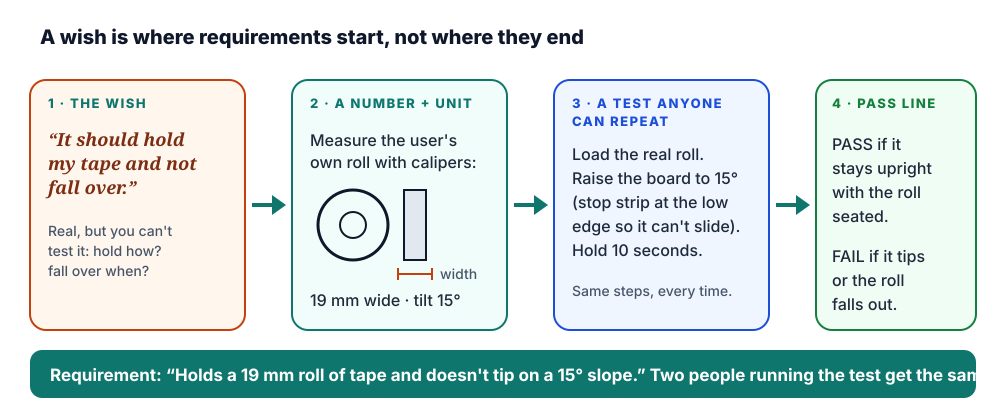
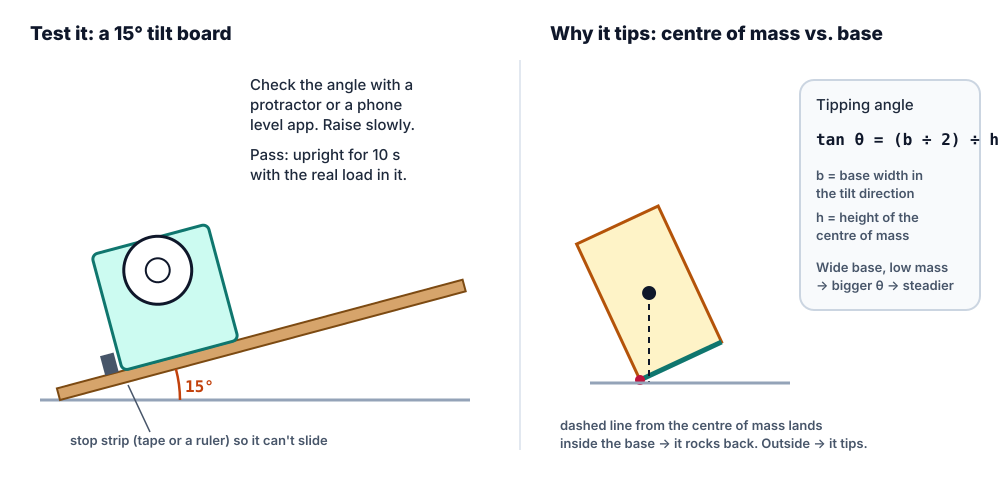

3D Design · Studio · Trio trait 2: Useful
Design for a real person: interview, measure, test
A useful tool is useful to someone. Before you model anything, find the person who will use it, watch them do the job, and write down what "works" means in numbers you can test. Then hand them the print and watch, without helping. Their struggle is your next revision.
- K–12, with grade-band versions
- 2–3 class periods + a user test
- Needs: a real user, calipers or a ruler, a tilt board
- Feeds the Trio "Useful" test

Hook · two tape holders
The best-looking print can be the one nobody uses
Picture two students who each design a tape holder for their teacher. The first models a beautiful turtle in an afternoon, guessing every size. The second spends ten minutes at the teacher's desk first: watches how she grabs tape between classes (one hand, the other holding papers), measures her roll with calipers, and notices the desk has a slight slope near the edge.
The turtle's hub is 2 mm too fat for the roll, and the shell tips over when she pulls a strip. The second holder is plainer, but it fits the roll, has a wide, heavy base, and a cutting edge she can reach with one hand. Which one is useful? Which one is still on the desk in a month?
Nobody needs to choose between beautiful and useful. The turtle could have been both, if its designer had asked first. This lesson is the asking, and the checking.
Step 1 · Interview
Find a real user and ask about what they actually do
Your user is a real person who will use the tool: a teacher, a sibling, a grandparent, the librarian, a younger student. "People in general" isn't a user. Name one person and go and talk to them for five minutes.
Do
- Ask open questions: How, What, Tell me about, Show me.
- Ask about the last real time: "Tell me about the last time you needed tape."
- Ask them to show you the job with the things they use now.
- Write their words exactly, in quotation marks.
- Follow up: "What happened next?" "What did you do about that?"
Don't
- Don't pitch your idea. "Would you use a turtle tape holder?" gets a polite yes and teaches you nothing.
- Don't ask leading questions: "Isn't your dispenser annoying?"
- Don't ask them to design it for you: "What should I make?"
- Don't argue or explain when they say something surprising. Write it down.
Why ban the pitch? People are kind. If you describe your idea, most will say they love it, whether or not they would ever use it. Rob Fitzpatrick's book The Mom Test is built on this point: ask about their life and their past behaviour, not your idea, and even your mom can't lie to you.
Check your question
Type an interview question and the checker sorts it: open, closed, leading, or a pitch. Try the samples, then write your own five.
A five-minute interview script
- Set up (30 s). "I'm designing something to help with ___. I want to learn how you do it now. There are no wrong answers, and I won't try to sell you anything."
- The last time (2 min). "Tell me about the last time you ___." Then: "What happened next?" "What was hard about that?"
- Show me (2 min). "Could you show me how you do it, with the things you use now?" Watch and measure (Step 2).
- Workarounds (30 s). "Have you tried anything else to fix that?" A workaround (a rubber band, a stack of books, a sticky note) is a requirement in disguise.
- Close. "Can I come back and show you a test version?" Now you have a tester.
Step 2 · Observe and measure
Watch the job and measure the real things
People describe what they think they do. Watching shows what they really do: the hand that's always full, the drawer that sticks, the extra step they've stopped noticing. While they show you, write down:
What they do, in order
"Picks up roll with left hand, finds the end with a thumbnail (8 s), tears with teeth."
Where they slow down or sigh
Each pause is a possible requirement: "finding the end" → "the free end stays where a thumb can reach it".
The object, the space, the hand
Measure with calipers or a ruler, to the millimetre: the item it holds, the space it must fit, the reach. Don't guess, and don't measure a different roll.
Where it will live
A sloped desk, a crowded shelf, a backpack, a younger child's hands, a cold garage. The setting decides tip, size and strength numbers.
Measuring well is its own skill: zero the calipers, measure three times, and record the biggest and smallest. See Measure and fit for calipers, units, and how much gap to leave for a press, slip or loose fit.
Step 3 · Requirements
Turn wishes into checks: a number, a unit, a test, a pass line
A requirement is a sentence you can check. "It should be sturdy" can't be checked: sturdy compared with what? "Holds 200 g without bending more than 2 mm" can. Every requirement needs four things:
- A number, measured from the real user, object or place (19, 15, 200).
- A unit: mm, °, g, seconds, tries, classmates.
- A test that anyone could repeat the same way.
- A pass line: what counts as pass and what counts as fail, decided before the test.
Say what it must do, not how
"Has a hinged lid" is a solution. "Opens with one hand in under 3 seconds" is a requirement, and a hinge, a slider or a magnet could each meet it. Keep the requirement open so the best solution can win.
Goals and limits
Criteria are what success looks like (holds the roll, doesn't tip). Constraints are limits you can't cross: fits the 220 × 200 × 250 mm printer bed, prints in a class period, uses PLA.
Every requirement has a source
Next to each requirement, note where it came from: a quote, an observation, a measurement. A requirement with no source is probably your own wish, not the user's.

Requirements builder
Pick a vague wish (or type one your user said), see what it's missing, then make it checkable. Add to my record sheet drops the result into the next empty row below.
Step 4 · User test
Hand it over. Watch. Don't help. Write it down.
A user test answers one question: can this person do the job with this object, without you? The moment you explain or point, you've tested yourself, not the design. Usability researchers have run tests this way for decades; Jakob Nielsen calls watching a user think aloud the single most valuable usability method.
- Plan from your requirements. Each requirement becomes a task ("Tear off a strip of tape") or a bench test you run yourself (tilt, load, 20 cycles). Write the task down so you say it the same way every time.
- Say only the task. "Please tear off a strip of tape, the way you would in class." Don't say how it works, what it is, or which part to use.
- Ask them to think aloud. "Say what you're thinking as you go. I'm testing the holder, not you."
- Watch, don't help. If they get stuck, wait. Count to 30 in your head. Then ask only "What are you looking for?" and write the answer down. Help only if they ask to stop, and record that they needed it.
- Record as it happens. Time with a stopwatch. Write where they hesitated, what they tried first, exact words ("Oh, it goes this way?"), and pass or fail for each requirement.
- Ask last. Afterwards, and only then: "What was the hardest part?" Thank them.
Tilt · load · cycles · size
Tilt board to the angle in your requirement, stop strip at the low edge, hold 10 s. Load in steps (a US nickel is 5.000 g, so 20 nickels = 100 g). Count 20 open-close cycles with tally marks. Measure the print with calipers.
More than one if you can
One user finds the big problems. Two or three find the ones that are about the design, not that one person. In class, test your user plus one classmate who has never seen it.
A fail is data, not a grade
Record exactly what happened. A failed requirement with a clear cause is better portfolio evidence than a pass you nudged into happening.
Step 5 · Revise
Change one thing, for a reason, then test the same way
Pick the failed requirement that matters most to your user. Find the cause, change one thing, and re-run the same test so before and after can be compared. Photograph both versions for your Trio portfolio.
| Failed requirement | Evidence | Cause | One change | Re-test |
|---|---|---|---|---|
| Doesn't tip on a 15° slope with the roll loaded | Tipped at about 14° on the tilt board, 3 of 3 tries | Base 40 mm deep; loaded centre of mass about 75 mm up. Predicted tip: atan(20 ÷ 75) ≈ 15°, right on the line | Base widened to 60 mm (predicted atan(30 ÷ 75) ≈ 22°) | Upright for 10 s at 15°, 3 of 3. Pass |
| Teacher tears a strip in under 5 s, one hand | 9 s, 7 s, 8 s; "Where's the end?" | The free end falls back onto the roll | Added a 3 mm ledge where the cut end rests | 4 s, 3 s, 4 s. Pass |
When a print fails for printing reasons (warping, a fused hinge, layers splitting) rather than design reasons, use Print troubleshooting and Materials and strength before you change the design.
Hands-on · record sheet
Interview + user test record
Fill it in here (use Save answers on the lesson pill so it's kept in this browser), or print it blank and take it to your user. It goes in your portfolio as the evidence for the Useful trait.
Design for a User · Interview + user test record · ClassroomOS 3D Design
A · Interview (open questions; write their exact words)
B · Observe and measure
| What I measured | Which size | Smallest (mm) | Biggest (mm) |
|---|---|---|---|
C · Requirements (number + unit + test + pass line)
| # | Requirement | Test and pass line | Result | Source / notes |
|---|---|---|---|---|
| 1 | ||||
| 2 | ||||
| 3 | ||||
| 4 | ||||
| 5 | ||||
| 6 |
D · User test (watch · don't help · record)
E · Revise
Differentiation
The same habit at every grade band
Ask, watch, draw
Interview a grown-up with two "Show me" questions. Trace the object they need held on paper; the tracing is the measurement. Requirements are "It must hold ___" and "It must not fall over." At the test, draw a smiley or a frown for each. The teacher handles calipers and printing; clay and cardboard work as well as plastic.
Three questions, two numbers
Three open questions from the script. Measure the object to the nearest millimetre with a ruler. Write two requirements with a number and a unit, and time the user test with a stopwatch. One change after the test.
The full record sheet
Calipers for every fit. Three to six requirements, each with a test and a pass line set before testing. Tilt and load bench tests. One evidence-driven revision with before/after photos.
Trace, predict, defend
Two users, or a user plus a stakeholder (whoever buys or cleans it). Every requirement cites its source. Predict the tipping angle and the fit before printing, and compare prediction with test. Separate criteria from constraints, and defend one trade-off in writing.
Checkpoint
Before you open a CAD app
- A named userand one exact quote from them.
- Real measurementsof the object, the space, or the hand, in millimetres.
- Three checkable requirementseach with a number, a unit, a test and a pass line.
- A test planthe task you'll say, word for word, and the bench tests you'll run.
Then model it in any CAD app: Workbench for free-form, Forge for a parametric stand or holder, or Blender or Tinkercad. Bring the print back to the same user for Step 4.
Practice problems
Easy1. Which interview question will teach you the most?
Easy2. The user said "It should be sturdy." Which is the best checkable requirement?
Medium3. Which one is a requirement, not a solution?
Medium4. You measured the hole in the user's tape roll at 25.4 mm. You want a slip fit with a 0.3 mm gap on each side of the hub. What diameter do you model the hub? (mm)
Challenge5. A holder's base is 60 mm wide in the tilt direction and its loaded centre of mass is 40 mm high. At about what angle will it tip? (nearest degree)
Medium6. During the user test, your user can't work out how to open the lid. What do you do?
Easy7. Your requirement says "holds 150 g". A US nickel is 5 g. How many nickels is the test load?
Vocabulary
- End user
- The real person who will use what you make. Name one.
- Open question
- A question that can't be answered with yes or no: How, What, Tell me about, Show me.
- Leading question
- A question that suggests the answer you expect ("Isn't it annoying?").
- Design requirement
- A checkable statement of what the design must do: a number, a unit, a test and a pass line.
- Criteria
- What success looks like for the design.
- Constraints
- Limits the design can't cross: size, time, material, budget, printer.
- User test
- Watching a real user try to do the job with your design, without help, and recording what happens.
- Think-aloud
- Asking a tester to say what they're thinking while they work, so you hear where the design confuses them.
- Prototype
- An early version built to test an idea.
- Iteration
- One cycle of testing and improving.
Sources
- Rob Fitzpatrick, The Mom Test: How to talk to customers and learn if your business is a good idea when everyone is lying to you (2013): ask about past behaviour, not your idea.
- IDEO.org, The Field Guide to Human-Centered Design (2015): interviews, immersion and observation methods.
- Hasso Plattner Institute of Design at Stanford (d.school), Design Thinking Bootleg (2018): empathy interviews and testing with users.
- Jakob Nielsen, "Thinking Aloud: The #1 Usability Tool," Nielsen Norman Group (2012).
- Steve Krug, Rocket Surgery Made Easy: The Do-It-Yourself Guide to Finding and Fixing Usability Problems (2009): small, informal user tests.
- NGSS Lead States, Next Generation Science Standards (2013): MS-ETS1-1 and HS-ETS1-1, defining criteria and constraints with precision.
- United States Mint, coin specifications: the 5-cent nickel weighs 5.000 g.